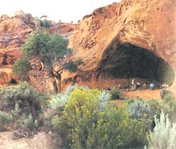
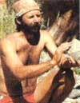
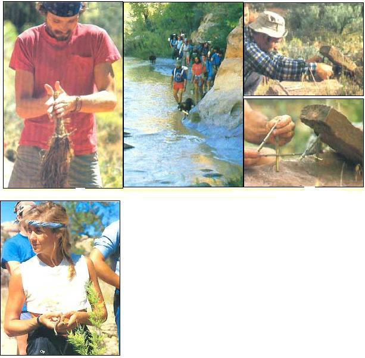
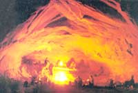
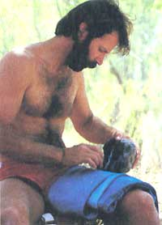

Cave life in the 20th century
WILDERNESS SKILLS SCHOOLS, PART IV:
The day begins gently, cautiously, the way I like it.
I awake on my back on the dusty floor of a shallow sandstone cave. Opening my eyes I see, high on the sloping back wall, the faded, crumbling remains of a pictograph-a small, crude painting made by some primitive artist who took shelter here centuries before Christopher Columbus was even so much as a gleam in his father's eye. The figure is odd, angular, Anasazi.
Anasazi -those mysterious early dwellers of the Four Corners region of the American Southwest. The name is Navajo and means "the ancient ones," or "the ancient enemy," and their ghosts pervade these hoodoo canyons yet. It's the summer of 1987, but the atmosphere here is Neolithic.
Photographer Branson Reynolds and I have come to this wilderness of sandstone and sage in south-central Utah to gather photos and experiences for a story on the Boulder Outdoor Survival School, best known by its acronym, BOSS.
From southwestern Colorado we came, crossing into Utah and over the Colorado River where it bleeds into Lake Powell just above the Hite Marina. Then up and over and down and through the rough-hewn splendor of the Burr Trail.
This 71 miles of dirt road between Bullfrog and Boulder, Utah, snakes through such natural wonders as the Waterpocket Fold and Capital Reef National Monument. Its ruts and sand traps force one to drive slowly, and, driving slowly, to see. It's exactly what a road through this rare and beautiful moonscape should be. Unfortunately, the Burr Trail is soon to be straightened and paved-downgraded, as it were; converted to just another Winnebago freeway.
But for now, at least, driving the Burr is still an adventure: At a place called the Gulch, Branson and I were stranded for a cold, wet, challenging night when a flash flood beat us to the low-water bridge by only seconds.
The following morning, the floodwaters had receded sufficiently to allow us to 4X4 across the swollen creek. Then, while lugging up the far slope, the transmission in Branson's Jeep began slipping, threatening to leave us Gulched-up for a second time in less than 24 hours. This struck us as funny; the joke being: Will we survive long enough to reach survival school?
We persevered and, at tiny Boulder, rendezvoused with nine fellow students and four instructors at BOOS’s staging area just below the hilltop ruins of a 700-year-old Anasazi pueblo. (Permanent headquarters are at Rex-burg, Idaho.)
That first afternoon and evening with BOSS, we were introduced to making fire with bow drills, learned something of the revolutionary Halfpenny system for identifying and interpreting animal tracks, and practiced using handmade bows and arrows, spears and atlatls. Our roof for the night was the star-spangled Utah sky.
Next morning, the 15 of us crammed into three pickup trucks for the 30-minute ride to a trailhead in the upper canyon of the Escalante River. A pleasant hike in, a few waist-deep river crossings, and here we be.
The sun's sharp, bright edge pushes slowly across the sandy flat below and up toward the open front of my little niche in this vertical wall of sandstone. From somewhere nearby comes the flutelike, descending-scale serenade of a canyon wren. Perfect. Faint in the distance is the constant, soothing rush of the Escalante River, swollen and muddy from the recent rains.
I sit up in my bed-a single blanket, the powdery duff of the cave floor for a mattress-and stretch to get the blood pumping; it will have to do, for the nearest coffee is more than 20 miles away. I stand and take inventory of my surroundings: A sand-sage flat stretches down to the river from the slickrock cliff face at the bottom of which my rock condo, the smallest of four along here, is situated. Up and down the riverbanks stand scruffy rows of giant cotton-woods, their bark hanging gray and baggy like the skin of very old men, their green leaves shimmering in the timid morning breeze. Beyond the river, rounded sandstone hills like off-white elephants rise to form an undulating horizon. And, above all, the big Southwestern sky.
Wilderness skills as they should be taught-in the wilderness.
I shake out my baggy fatigue trousers to dislodge any scorpions or other sneaking invaders of the night, tug them on and pick my way, barefoot, out from the chill shadow of the cave and into the warm morning sun, placing my tender twentieth-century feet carefully between angry clumps of prickly pear cactus. I greet Branson, who chose to sleep out among the sage last night, then I wander off alone.
Soon enough, things begin to happen. From the big cave up the canyon a way, where most of the rest of the group spent the night, come the sounds of morning activities... the harsh squawking of someone working a bow drill, trying to start a cooking fire the good old hard way... the sharp clack-clacking of a toolmaker striking stone against stone . . . laughter.
I return to my sleeping niche for socks, boots and T-shirt, then go to join the others. On an elevated ledge at the back of the big cave sits head instructor David Wescott, his legs crossed yogi-fashion, a pile of shaggy juniper bark heaped to his front and a coil of hand-twisted rope growing in his lap.
"Uncle Dave" is the school's director and, thus, the BOSS boss. He stands to about six feet and wears medium-length dark brown hair and a close-trimmed beard. His demeanor is serious but easygoing; an unassuming and likable fellow. Wescott has been at this rope-making task for only an hour now and already has four feet of half-inch-diameter cordage for his skilled efforts. This rope isn't as strong as the much thinner cord another of the instructors showed us how to braid from yucca fibers a couple of evenings ago, but it's soft against the skin and more than stout enough to serve its intended purpose as a tumpline for a wicker pack basket.
Down on the lower level of the big cave, the student who's been sawing with the bow drill finally gets smoke, then flame to kindle her morning fire. She hoots in delight-this is her first success-and is congratulated by her companions.
I settle down in a quiet corner of the cave to carve a spoon from cottonwood bark. Yesterday, I'd used my hunting knife to whittle a fine big spoon, more like a ladle, and this morning I've determined to shape a second, smaller utensil, this time using a scalpel-sharp sliver of fractured river rock as a knife.
After a while we all wander out into the sunshine ... to study animal tracks in the soft sand along the river's edge (here a mule-deer doe grazed calmly in the night while her fawn cavorted nearby) ... to check the Paiute and figure-four deadfalls we set for rodents last evening ... to gather willow and grass for basket weaving ... to knap flint. . . to search for wild edible plants. The latter task proves particularly rewarding.
With our instructors' help, we come up with a veritable Anasazi salad: prickly pear fruit, salsify root, purslane, squaw berries, holly berries, the chewable ends of horsetail joint grass, seeds of four-winged saltbush, unopened buds of evening primrose, cotton-wood cambium, spectacle pods, leaves of young Russian thistle and the inner flower petals of Indian paintbrush. We graze on these goodies as we find them-a grassroots movable feast. A couple of the more staunchly carnivorous among us even snack on bugs. (Grasshopper, they report, has a pleasant, nutty taste. The rest of us take their word for it.)
Later in the morning, we all work together to build a two-person brush survival shelter, or "litter lodge," of limbs, bark and leaves gathered from downed cottonwoods. (Construction time, 19 minutes, and I would trust the structure's efficacy in any weather.)
Afterwards, we trail down to the river for a spell of "noodling." This ancient form of fishing involves wading along the edges of a stream or lake and reaching up into holes under roots and overhangs along the banks, or feeling down into the quiet pockets behind submerged rocks-probing gently for the scaly form of a resting fish. If you locate one, you swiftly pin it to the bottom with one hand, then grasp it by a gill with the other and hoist it out.
In this murky floodwater, noodling is spooky business, and none too productive. We come up with only one small fish, which instructor David Holliday guts with a sliver of chert, then skewers on a willow grill fashioned on the spot. Thus mounted, the fish will slow-cook over the dying embers of the morning's fire and serve as the main course of Holliday's supper. (When we return to camp that evening, Holliday-who has sworn to eat nothing on this trip but what he can forage-discovers that the two camp dogs have pilfered his piscatorial snack. It's sad to see a grown man almost cry.)
At midday we hike up a side canyon to the nearest source of drinking water-two small, quicksand-banked potholes. This stuff is the color of good sour-mash whiskey. ("Water's for drinkin'; Dickel's for sippin'.") Still, we're told, it's safer than the Escalante River, which is tainted by that bane to wilderness wayfarers, giardiasis.
As I kneel beside the nearest of the twin pools, I startle a floating horsehair worm-a foot-long, pencil-thin Nematomorpha. The horsehair's larvae are parasitic on insects, not mammals. However...
When I splash the water with my hand, the sinuous little creature writhes across the surface like an anorexic water snake, then dives, disappearing into the gloom. I kneel to drink, but, thinking of the worm and its invisible progeny, hesitate.
"Just grit your teeth to strain out the big stuff, and gulp," comes advice from behind me. It's Uncle Dave, who laughs at this stock BOSS water joke, then swigs from the container he's brought along for hauling water back to camp. BOSS groups have been drinking from desert potholes like these, and worse, for years, he assures me, and only a very few students have ever gotten sick.
A very few. Well, it just takes one if that one is me. But what the hell, I figure. I'm thirsty; I've been thirsty for hours now, and, so far as I know, it's either drink here or go dry I swallow my doubts, dip up a double palmful and gulp deep of this lukewarm organic soup.
A student kneeling at the second pool sinks elbow-deep in the shallow quicksand but manages to extricate himself without help. I reflect that this isn't the sort of place I'd want to come drinking alone. Unless I had to.
(Later, I confide to Wescott that I wouldn't mind hiking farther, a lot farther, to find water with a little less color and body. The following day, he obliges by leading me and a handful of like-minded souls up the river about a mile to a cool, clear spring.)
Come evening, we gather in the big cave and boil up a nourishing stew. Delicious. While we're about it, we use flour from our ration packs and water carried back from the potholes to make up a batch of ashcakes for tomorrow's breakfast. Aptly named, these ashcakes-baked as they are atop flat stones placed in the ashes of an open fire.
After dark, we loaf around the twin fires in the big cave, working on primitive crafts in the dim, flickering light, discussing the day's events and what's yet to come. After a while, I slip off into the darkness and hie to my hole in the rock and my warm wool blanket.
So passes another day of cave life in the twentieth century, BOSS style.
At the backcountry camp of another outdoor school I attended this past summer, conversation turned to the competition. When the talk came around to wilderness survival as opposed to skills schools, one of the instructors, a man who had attended a month-long BOSS survival trek, commented, with what sounded like serious admiration, that "those people at BOSS are so hard they eat rocks." I doubt it, though I can't swear it isn't so: BOSS groups do spend a lot of time breaking rocks (ostensibly to shape primitive stonecutting tools), and they do have one course advertised as being for "hard-core rock-biters." But still. . .
Although BOSS offers classes of varying difficulty and duration, the one that has earned them a reputation for being the toughest of all civilian outdoor survival schools is their 26-day Wilderness Expedition. According to David Wescott, "This program is designed for the individual seeking to test him- or herself physically, mentally and emotionally. You'll hike hundreds of miles [the average is 200 to 250] and may lose 10 to 20 pounds in weight. The mental and emotional challenges come in facing and defeating obstacles and tasks set before you by nature and your instructors, and in adjusting and learning to live with nature in a harsh environment."
The stock BOSS water joke? "Grit your teeth to strain out the big stuff."
Sounds tough, and, according to the alumni and instructors with whom I have spoken, it is tough-nearly a month of intense foot travel across some of Utah's rugged and beautiful canyonlands, carrying a minimum of food, water and equipment.
The 26-day course is divided into five stages. The first two or three days are called Impact, a rigorous time during which you hike long and hard, enjoying little food, water or rest. Welcome to the wilderness.
Stage two, Survival, begins upon reaching a predetermined backcountry base camp and lasts for a full week. During this time, you manufacture primitive tools and gear and learn essential survival skills to carry you through the remainder of the course.
Stage three, Group Expedition, involves a re-creation of the primitive hunter-gatherer lifestyle. During this stage, the main group (of perhaps 20) breaks up into several smaller groups, each consisting of a handful of students and one instructor. Each group then strikes out on a different route, traveling several miles a day, fishing, foraging and hunting and trapping rodents and other non-game species as they go. At a prearranged time and place, the groups rendezvous.
The fourth stage is the most trying for some students and the most memorable for most. It's called Solo, and requires you to spend three to five days entirely alone in the wilderness.
The final stage is the Student Expedition, which is similar to the Group Expedition in that it involves breaking into small groups that travel different routes, each accomplishing certain designated tasks en route before it's time to rendezvous once again. But this time around, the student groups are on their own, unaccompanied by instructors.
For prospective students who can't afford the time or cost of a month in the backcountry, or who simply don't feel the need for such a heavy dose of physical hardship, BOSS offers a 14-day condensed version of the longer course.
And then there's the torturous seven-day Advanced Primitive Living and Nature Observation trek-the "rock-biter" ordeal referred to earlier. The premise here is primitive simplicity itself: no gear, no food, not even a penknife. You walk into the wilderness with, quite literally, only the clothes on your back and, for seven days, survive by wits and gumption. Enrollment in this course is sensibly restricted to those having previous survival training, and class size is limited to 12 students (accompanied by two or more instructors).
It was this rock-biter ordeal that Uncle Dave Wescott tried to lure me into. "It'll be fun," he tempted. "It'll provide lots of photo opportunities, lots of anecdotes for your story." All too true, I suspected.
Branson and I talked it over one chilly night while camped in a remote Utah side canyon. Tallying up our qualifications to participate in such a rigorous ordeal, we reminded each other of our considerable achievements in the out-of-doors: There was our previous survival school experience; our day-to-day he-men, macho lifestyles in the mountains of Colorado; our middle-age vigor; our openness to adventure; our fearless disdain of danger and discomfort. We took all of this into consideration. . . and told Wescott to look elsewhere for victims. Instead, we opted for an Advanced Skills clinic.
In these seven-day skills clinics, referred to collectively as SOS ("Sink or Swim"? BOSS isn't saying), the physical challenge is minimized, with emphasis being placed instead on developing primitive survival crafts and wilderness skills in a relaxed and reasonably comfortable outdoor setting. Rather than hiking across great expanses of wilderness-starving, freezing, dehydrating, suffering, surviving -the skills clinics are stationary (though far from sedentary), conducted at permanent base camps in Utah's Upper Escalante Canyon (spring through fall) and Idaho's Snake River Valley (winter).
Although modernism is gently discouraged, SOS students are allowed to bring knives, backpacks, sleeping bags, water filters and other contemporary gear (within reason), and the rations are nutritious and filling, if not fancy.
In addition to the courses outlined above, BOSS also offers 12-day Adult Women's Outings, a 14-day Mexico Desert and Marine Adventure, a seven-day Staff Training Class for present or aspiring outdoor instructors, and a seven-day Winter Skills Clinic.
While BOSS doesn't give its services away, the primitive, low-technology nature of most of the courses helps keep down overhead-and thus tuition-making BOSS a bargain relative to most other outdoor schools. Here's a sampling of 1988 course offerings and tuition rates:
• 26-day Outdoor Survival Trek-$895 (including transportation from and return to Provo, Utah)
• 14-day Outdoor Survival Trek-$590
• 14-day Mexico Desert and Marine Adventure-$875
• 7-day Winter Living Skills Clinic (Idaho)-$495
• 7-day Basic and Advanced Skills Clinics-$425
• 7-day Advanced Primitive Living and Nature Awareness ("rock biters")-$425.
College credit can be earned for most BOSS courses, and a limited amount of tuition assistance is available to students who can show financial need.
What of the staff?
Larry Dean Olsen, the father of modern primitive survival education and author of the bible of wilderness survival lore, Outdoor Survival Skills (BYU Press, 1967), has said of BOSS director David Wescott, "There are few experts in the area of primitive skills, and Dave is one of them." Wescott was an early star student of Olsen's, then went on to develop and teach his own outdoor survival courses at Brigham Young University and other institutions.
Today, Uncle Dave Wescott continues to seek out the foremost experts in various primitive arts-such as Dr. James Halfpenny, author of the innovative A Field Guide to Mammal Tracking in North America (John-son Books, 1986), and preeminent flint-knapper Errett Callihan-to study their skills at first hand. More important, Wescott spends an average of 200 days a year living primitively in the out-of-doors. The experience shows.
The instructors Wescott hires to assist him are also highly qualified and varied in their outdoor experience. Like David Holliday, an incredibly devoted and competent authority on primitive crafts and wild edible plants and their uses. When not roaming the Utah backcountry with BOSS, Holliday conducts special programs in environmental appreciation for the Tucson, Arizona, public school system. And there's Mike Ryan, a quiet but likable fellow with hawkish features, who passes his summers with BOSS in Utah, and his winters as a hunting guide, horse packer and cowboy in northern Montana.
Would I recommend Boulder Outdoor Survival School to my friends? To my family? To you?
If you're looking for a pampered, catered, Yuppie-style outdoor experience-no. If you're after paramilitary-type "survivalist" training-no. If, however, you wish to learn primitive crafts and down-to-earth, low-impact outdoor survival skills, or if you have an itch to test your strength and character (and strength of character) in a most serious fashion, then absolutely yes.
While BOSS isn't the only competent wilderness survival school around, it's the oldest, it's the most challenging, and it teaches wilderness skills as they should be taught-in the wilderness.
For a 1988 course schedule and complete enrollment information, send a 39 cents stamp to BOSS at P.O. Box 905, Rexburg, ID 83440. Or call 208/356-7446.
|
 Uncle Dave Wescott is the school's director and one of the few real experts in the field of primitive skills. |
 Students learn to make natural corage,to contruct deadfall traps,and to adjust to and live with nature in a harsh environment. |
 Students gather in the big cave. |
|
 Wescott examines a chuck of obsidian prior to fracturing it. |
 |
|